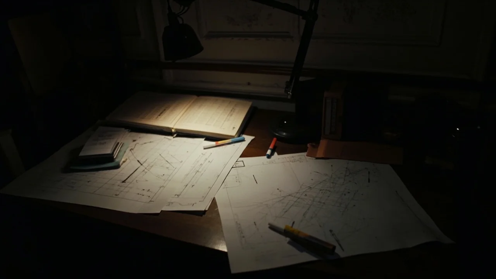
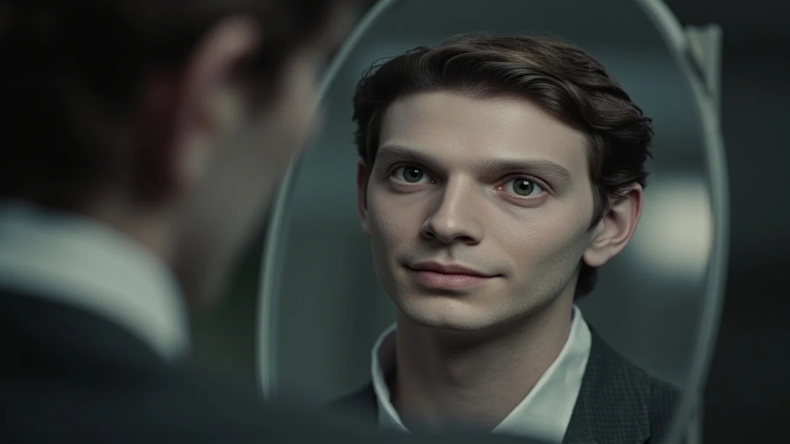
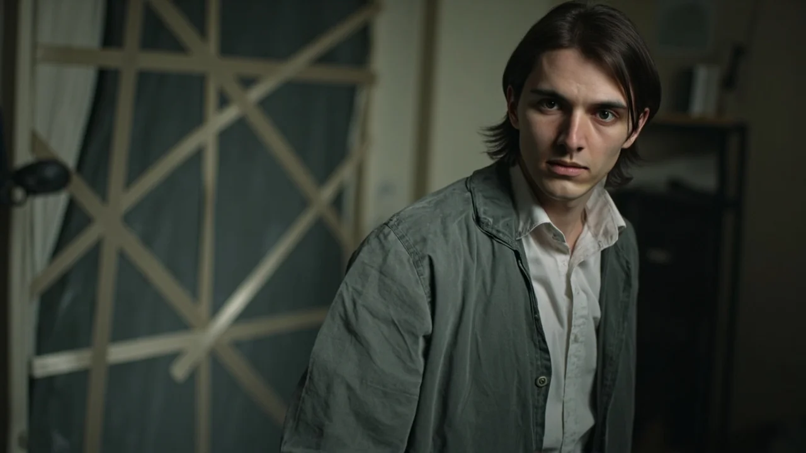
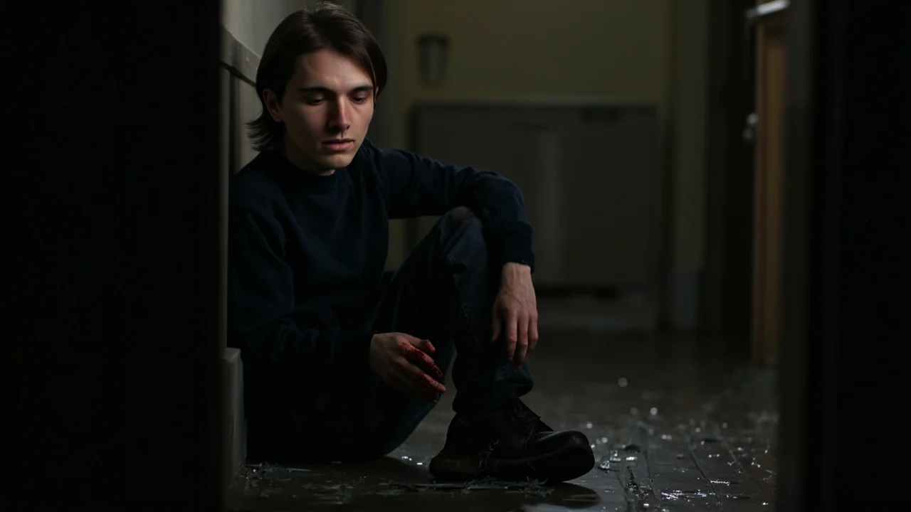
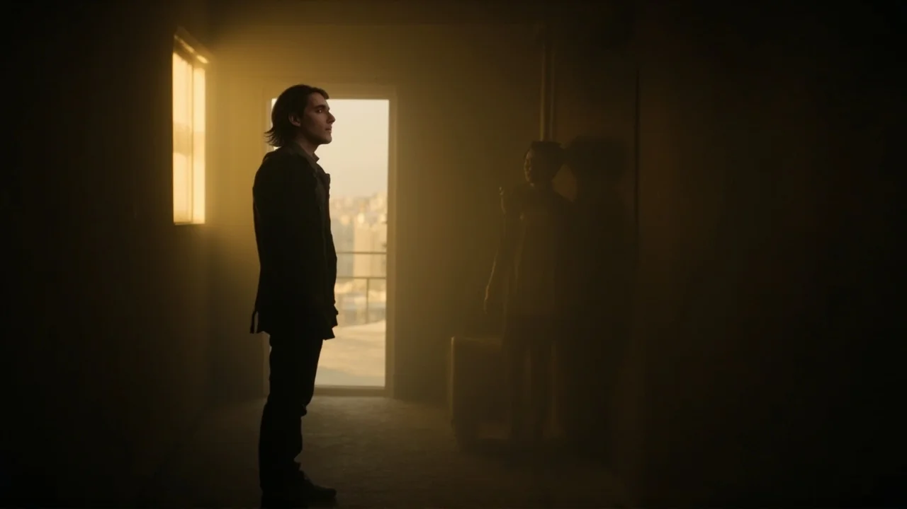

El tubo fluorescente del baño parpadeó dos veces antes de estabilizarse en un zumbido agudo. Daniel escupió la espuma blanca en la pila de porcelana, abrió el grifo y se enjuagó la boca con el cuenco de la mano. Eran más de las dos de la madrugada. En su cuarto aún aguardaban abiertos los manuales de cálculo y los rotuladores sin tapar.
Al erguirse y sacudirse las gotas de la barbilla, alzó la vista hacia el espejo del botiquín.
Durante una fracción de segundo tan minúscula que casi pareció un tropiezo del ojo, el muchacho del cristal tardó en levantar la cabeza. Daniel ya tenía los ojos clavados en la luna de vidrio, pero su réplica todavía estaba incorporándose antes de cuadrar la mirada al frente. El muchacho se quedó inmóvil, con la espalda rígida.
—El cansancio —murmuró para sí en el silencio de la casa—. Llevo catorce horas seguidas sobre los planos.
Movió la mano derecha hacia el cepillo de dientes. En el espejo, la mano reflejada repitió el gesto con exacta sincronía. Daniel soltó el aire de golpe, apagó la luz y caminó a oscuras por el pasillo hacia su cama, convenciéndose de que la fatiga ocular jugaba malas pasadas.
Sin embargo, al apoyar la cabeza en la almohada y mirar hacia la puerta entreabierta, la luna del armario devolvió el reflejo de la farola de la calle. En el fondo de aquel cristal oscuro, la silueta de su cuerpo tardó dos segundos en acomodarse sobre las sábanas.
La tarde siguiente amaneció cubierta por una lluvia plomiza que golpeaba las contraventanas. Daniel apenas había avanzado dos páginas. Cada vez que alzaba la taza de café, sus ojos se desviaban hacia la puerta acristalada del aparador del salón. Había una discordancia sutil entre su movimiento y la imagen.
A media tarde, agobiado por el dolor de cervicales, dejó caer el bolígrafo y se cubrió el rostro con ambas manos, hundiendo los dedos en el pelo revuelto con un suspiro áspero.
Cuando separó los dedos para mirar entre ellos, sintió un golpe helado en el estómago.
En el cristal del aparador, el reflejo no tenía las manos en la cara. La figura estaba erguida en el interior del mueble, con los brazos caídos y la espalda recta. Lo miraba fijamente desde el fondo de la madera barnizada, con una sonrisa estrecha y tensa que no arrugaba los pómulos ni los ojos. Era una mueca rígida que imitaba la alegría sin comprender la carne.
Daniel se puso en pie de un salto, empujando la silla con un chirrido estridente.

En ese mismo instante, la figura del aparador se recompuso con un espasmo y adoptó la misma postura de sobresalto, jadeando con la boca abierta. Pero la trampa ya estaba descubierta: la mirada del cristal no reflejaba miedo, sino una curiosidad paciente y calculadora.
—¿Daniel? ¿Qué ha sido ese golpe, hijo?
Carmen apareció por el pasillo con un trapo de cocina entre las manos. Al verlo pálido, apoyado contra la mesa con los nudillos blancos de tanta presión, se acercó a paso rápido y le tocó la frente.
—Tienes la piel helada —dijo su madre con ternura—. Llevas semanas sin salir más que a por pan. Te preparo una manzanilla y te acuestas un rato.
Carmen se dio la vuelta hacia el espejo ovalado del recibidor para colocarse la pinza de carey en el pelo. Daniel la observó con el pulso desbocado. La imagen de su madre en el cristal era normal: sus movimientos eran simultáneos y la preocupación de su entrecejo se copiaba sin demora.
Pero detrás de ella, en el mismo óvalo de vidrio, el Daniel del espejo no miraba a la madre. Clavaba sus ojos exclusivamente en el Daniel real, y mientras el muchacho parpadeaba por el sudor, los párpados del doble permanecieron inmóviles, abiertos de par en par.
La tormenta arreció al filo de la medianoche. El viento azotaba los canalones y la lluvia arrojaba grava contra los cristales. Daniel no se desvistió. Permaneció sentado en el borde del colchón con la lámpara de la mesilla encendida, vigilando el espejo de cuerpo entero frente a la cama.
A las tres y diecisiete de la madrugada, la lámpara dio un chasquido seco y la bombilla se fundió. Solo quedó la claridad lechosa de la farola municipal entrando entre las rendijas.
Daniel intentó levantarse, pero sus piernas no respondieron. En el fondo del espejo, la habitación no estaba a oscuras. Había una claridad cenicienta que no provenía de ninguna ventana, y la cama reflejada estaba vacía, con las mantas pulcras y estiradas.
La figura de Daniel avanzaba desde el fondo del espejo hacia la superficie.
Caminaba sin ruido de pasos. Se detuvo a escasos centímetros del marco de madera oscura que separaba los dos mundos. Vestía su mismo jersey azul y sus vaqueros gastados, pero su postura revelaba una vitalidad hambrienta.

Impulsado por un instinto ciego, Daniel gateó sobre la alfombra hasta quedar frente al marco. Alzó la mano derecha y apoyó la yema del dedo índice contra el cristal.
Cualquier persona que acerca un dedo a un espejo observa una separación de milímetros debida al grosor del vidrio antes de tocar el azogue. Pero esta vez no hubo separación.
La yema del reflejo se aplastó directamente contra la yema de Daniel, piel contra piel a través de una película invisible.
Un frío atroz, más denso que el hielo del invierno, subió por el dedo de Daniel, trepó por la muñeca y le atenazó el codo con un dolor punzante. Daniel quiso apartar el brazo, pero la succión del cristal lo retenía como un fango helado.
El doble pegó el rostro al vidrio. Su respiración no empañó la superficie. Abrió los labios y una voz áspera, que sonaba como el roce de dos pizarras en un pozo, vibró directamente en los huesos de su cráneo:
—Estás agotado —dijo el ser por la vibración del cristal—. Te pesan los días. Yo no me canso nunca. Déjame salir y ocuparé tu sitio. Nadie notará la diferencia. Ni siquiera tu madre.
—No... —jadeó Daniel, tirando del brazo con todas sus fuerzas hasta que la piel se despegó con un chasquido viscoso—. ¡Esta es mi vida!
El muchacho cayó de espaldas sobre la tarima, respirando a bocanadas mientras se frotaba los dedos entumecidos. En el espejo, la entidad sonrió y apoyó ambas palmas planas contra el cristal, empujando hacia afuera. El vidrio crujió, abombándose hacia el interior del cuarto como una lámina de goma tensa.
A la mañana siguiente, Daniel se levantó antes del amanecer con los ojos inyectados en sangre.
Aprovechando que Carmen había salido a la compra, recorrió la casa con sábanas viejas y cinta de carrocero. Tapó el espejo ovalado del pasillo. Cubrió el botiquín del baño con dos capas de tela áspera. Envolvió la luna del armario de su cuarto hasta convertirla en un bulto ciego y opaco.
Pero la casa estaba llena de trampas.

Al entrar en la cocina a por agua, su mirada tropezó con la cafetera de acero sobre los fogones apagados. En la curvatura pulida del metal, su figura deformada no se inclinaba hacia el vaso: la imagen esférica lo señalaba con un dedo largo y se burlaba en silencio.
Daniel cerró los ojos y retrocedió, chocando contra el fregadero.
Entonces escuchó el goteo.
Venía de la ventana que daba al patio interior de luces, donde la lluvia resbalaba en regueros paralelos sobre el cristal exterior. Giró la cabeza muy despacio.
Allí estaba.
Al otro lado del vidrio de la cocina, suspendido en el vacío del patio como si pisase suelo firme, su doble lo miraba fijamente. Pero esta vez la frontera física cedía. La entidad levantó el brazo derecho y empujó la superficie de la ventana.
Con un sonido blando y húmedo, semejante al desgarro de una membrana, los nudillos del doble atravesaron el plano del cristal sin quebrarlo. Los dedos penetraron en el aire caliente de la cocina. Eran idénticos a los de Daniel, pero rezumaban una escarcha negruzca que cayó en gotas sibilantes sobre el azulejo blanco.
El ser deslizó media mano al interior, saboreando el aire real.
—Falta muy poco —susurró la voz por las rendijas—. Cuando el cristal se abra, ya no sabrás en qué lado te quedaste.
El pánico encendió la sangre de Daniel. Salió de la cocina a la carrera, fue hasta el armario de herramientas del recibidor y abrió el cajón inferior. Entre cables viejos encontró el pesado martillo de uña con mango de fresno que su padre había usado durante décadas.
No hubo vacilación. El muchacho actuó con la furia ciega de quien defiende su pellejo en una trinchera.

Regresó al pasillo y descargó el primer golpe sobre el espejo ovalado del recibidor. La sábana amortiguó el estruendo, pero bajo la tela el cristal estalló con un crujido sordo. Daniel arrancó el lienzo y golpeó una y otra vez el centro del marco. Los pedazos plateados saltaron por los aires, cayendo sobre la tarima con un tintineo agudo.
En cada fragmento esparcido por el suelo, el rostro del doble aparecía multiplicado: ojos desorbitados, bocas abiertas en muecas de dolor convulsivo y manos que se agitaban dentro de esquirlas del tamaño de monedas.
—¡Fuera! ¡Lárgate de mi casa! —gritó Daniel con la voz rota, sintiendo cómo el polvo de azogue le quemaba la garganta.
Entró en el baño como una tromba. De dos martillazos arrancó la puerta del botiquín y la estrelló contra el suelo de gres hasta convertirla en arena brillante. Pasó a su dormitorio. Desgarró la cinta del armario empotrado y arremetió contra la gran luna vertical.
El golpe abrió una estrella blanca de fracturas que recorrió el espejo de arriba abajo. A través de la telaraña de grietas vio la figura del ser: la entidad se retorcía con la boca abierta en un alarido mudo, con el pecho arqueado hacia atrás mientras grietas luminosas se abrían en su piel y en su ropa, partiéndolo en pedazos.
Daniel descargó un último golpe en el centro del pecho reflejado. El espejo entero cedió hacia adentro y se desplomó contra el fondo del armario en una cascada de astillas inertes.
El silencio cayó sobre el piso como una losa.
Daniel dejó caer el martillo. Sus manos sangraban despacio por cortes superficiales en las palmas y los nudillos. Las astillas crujían bajo sus zapatillas mientras retrocedía hasta dejarse caer contra la pared.
Miró a su alrededor. No quedaba un solo espejo entero. La casa era un campo de ruinas de vidrio quebrado, pero la presencia se había evaporado. El aire volvía a sentirse tibio y ordinario. Había destruido la puerta antes de que el usurpador pudiese poner ambos pies en su mundo.
La mañana siguiente trajo una calma limpia que disipó la lluvia. Un sol suave de otoño entraba por los balcones, proyectando rectángulos dorados sobre el salón.
Carmen no había gritado al encontrar el destrozo la tarde anterior. Al ver a su hijo sentado entre los restos de cristal con la mirada perdida y las manos ensangrentadas, simplemente lo había abrazado con lágrimas en los ojos, creyendo que la presión de los exámenes le había quebrado los nervios. Le había curado los cortes con yodo y lo había acostado sin hacer preguntas, tratándolo como a un convaleciente.

Ahora, Carmen barría con paciencia las últimas esquirlas de la alfombra, juntándolas en el recogedor de metal con un sonido rítmico.
Daniel salió de la cocina sosteniendo una taza de café humeante con ambas manos. Se sentía extrañamente descansado. Por primera vez en meses no sentía opresión en el pecho ni tirantez en los hombros. Los cortes en los nudillos ya no le dolían; la piel alrededor de las heridas se veía tersa, seca y limpia, como si hubiesen cicatrizado en horas.
Bebió un sorbo largo. El café estaba hirviendo, pero el calor no le quemó la lengua ni el paladar; descendió por su garganta como una corriente tibia y agradable.
Caminó hacia la gran cristalera del balcón, atraído por el aire fresco de la calle. Apoyó el hombro contra el marco de madera y miró los tejados mojados, saboreando el silencio.
Detrás de él, el roce de la escoba se detuvo en seco.
Daniel no se dio la vuelta de inmediato. Siguió contemplando el vuelo de las palomas.
—Daniel... —la voz de Carmen sonó hueca, desprovista de su calidez habitual, afinada por una vibración de desconcierto que heló la estancia.
El muchacho ladeó la cabeza con una sonrisa serena.
—Dime, mamá.
Carmen había soltado el mango de la escoba. Tenía las manos entrelazadas contra el pecho y la mirada fija en el ventanal de la terraza, donde la luz del sol pegaba de lleno contra el cuerpo de su hijo.
—Daniel... —repitió la mujer, dando un paso vacilante hacia atrás mientras el color abandonaba sus mejillas—. ¿Por qué llevas toda la mañana sin proyectar sombra en el suelo? ¿Y por qué tu cuerpo no se refleja en el cristal de la ventana?
Daniel clavó los ojos en el vidrio transparente del balcón que tenía a un palmo de la nariz.
La calle, los árboles del parque y los cables de la luz se veían con nitidez a través del panel. Pero en la superficie lisa del cristal no había ninguna silueta. No había rastro de su jersey azul marino, ni de sus ojos pardos, ni del lunar bajo el labio. Ni siquiera el vaho de su respiración empañaba el vidrio a pesar del aire frío.
Al bajar la vista hacia sus manos, comprobó que sostenían la taza con firmeza milimétrica, pero los dedos no tenían peso.
El muchacho que había empuñado el martillo creyó que quebraba la puerta para impedir que el monstruo saliera. Pero los espejos solo muestran lo que tienen delante. Y él no había destruido la cárcel desde fuera. Había roto los cristales desde dentro para no volver a salir jamás.